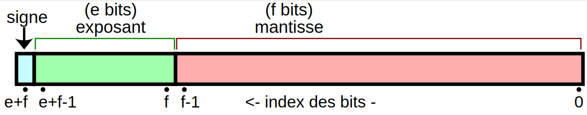

On rappelle que l’encodage des nombres flottants s’effectue de la façon suivante:
est le signe représenté par le bit de poids fort:
- : signe
- : signe
est l’exposant représenté par un entier relatif décalé de (e représente le nombre de bits de l’exposant)
est la mantisse qui est un nombre binaire à virgule compris entre 1 inclus et 2 exclus. Le seul chiffre avant la virgule étant toujours 1, il n’est pas représenté(on le dit implicite), et le codage binaire de la mantisse représente donc uniquement les chiffres après la virgule qui sont en base 2 des demis, des quarts, des huitièmes…

Encodage sur un octet
On considère des nombres flottants encodés sur un octet avec:
- 1 bit de signe,
- 3 bits d’exposant,
- 4 bits de mantisse.
Calculer le décalage de l’exposant. Quel est l’intervalle d’exposant accessible?
Trouver les nombres à virgule représentés par les mots binaires suivants:
0111 10001001 0001
Donner les représentations binaires des nombres flottants suivants:
- .
- .
Encodage demi-précision sur 16 bits
On considère des nombres flottants encodés sur deux octets avec:
- 1 bit de signe,
- 5 bits d’exposant,
- 10 bits de mantisse.
Calculer le décalage de l’exposant. Quel est l’intervalle d’exposant accessible?
Trouver les nombres à virgule représentés par les mots binaires suivants:
01000000 1000000011000000 00100000
Donner les représentations binaires des nombres flottants suivants:
- .
- .
Encodage simple précision sur 32 bits
On considère des nombres flottants encodés sur 32 bits avec:
- 1 bit de signe,
- 8 bits d’exposant
- 23 bits de mantisse.
Calculer le décalage de l’exposant. Quel est l’intervalle d’exposant accessible?
Trouver les nombres à virgule représentés par les mots binaires suivants
00111111 11000000 00000000 0000000010111110 00000000 00000000 00000000
Donner les représentations binaires des nombres flottants suivants:
- .
- ).
Exercice Python n°1
On considère le programme suivant:
x = 1.0
y = x + 1.0
while y - x == 1.0:
x = x * 2.0
y = x + 1.0
print("Terminé, y=", y)
Si l’on calculait sur des nombres rationnels exacts, que se passerait-il lors de l’exécution de ce programme ?
Écrire ce programme et l’exécuter. Que constate-t-on ?
Modifier le programme de façon à déterminer au bout de combien d’exécutions du corps de la boucle il s’arrête, ainsi que la valeur de
xà la fin de cette exécution.Comment est représentée cette dernière valeur de
x? Et celle dey?
On pourra utiliser un convertisseur en ligne comme: http://www.binaryconvert.com/convert_double.html
- Proposer une explication de ce comportement.
Exercice Python n°2
On considère le programme suivant:
a = 0.0
for _ in range(0, 10):
a = a + 0.1
print(a)
Si l’on calculait sur des nombres rationnels exacts, que se passerait-il lors de l’exécution de ce programme ?
Écrire ce programme et l’exécuter. Que constate-t-on ?
Vérifier avec le convertisseur en ligne que la représentation binaire de 0,1 est
0_01111111011_1001100110011001100110011001100110011001100110011010.Quel nombre décimal cette représentation désigne-t-elle en réalité ?
Expliquer le résultat obtenu.